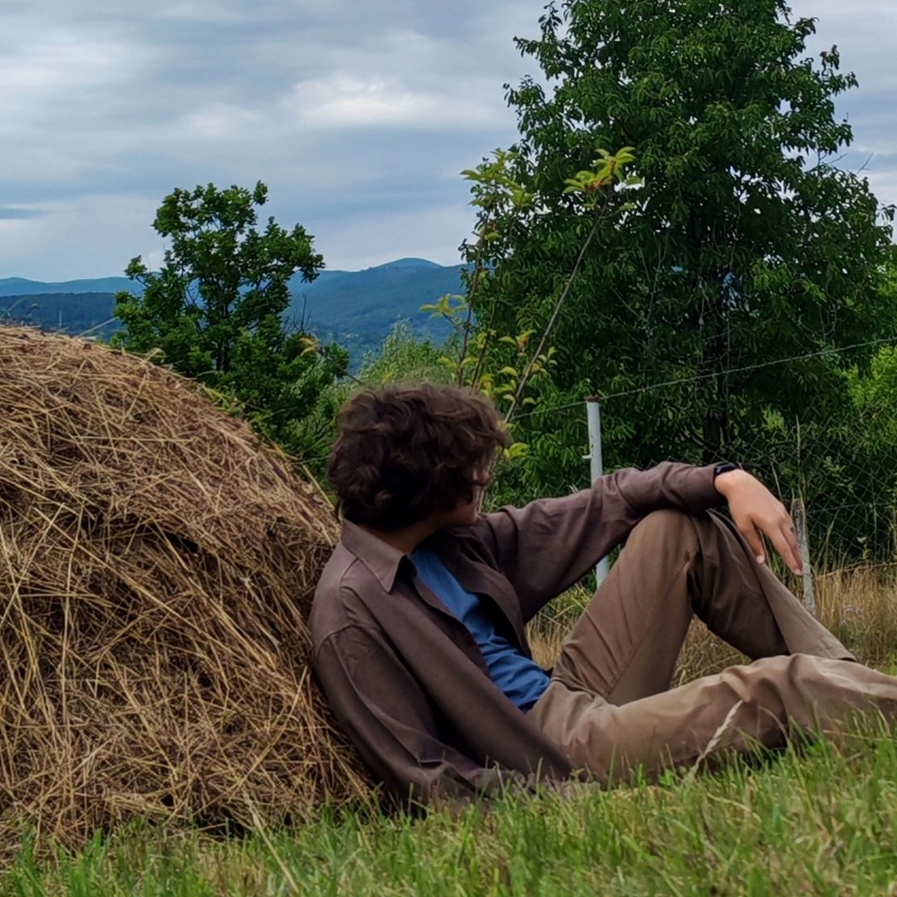

Hiiii! My name is Vasies David Ioan, the Kanazuki part is a nickname I got used to using online instead of my real one. It comes from anothers friends nickname, but I changed mine a bit. The meaning of it is October(or as in the old Japanese lunisolar calendar "The month of no Gods"), and the rest "no Jusanya" comes from the thirteen night.
I am staring 9th grade at CNDV in the Mathematics and Informatics class with an english bilingual program.